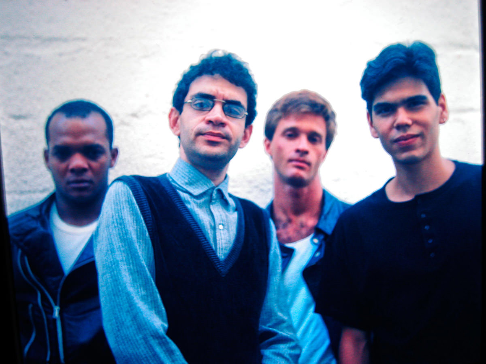
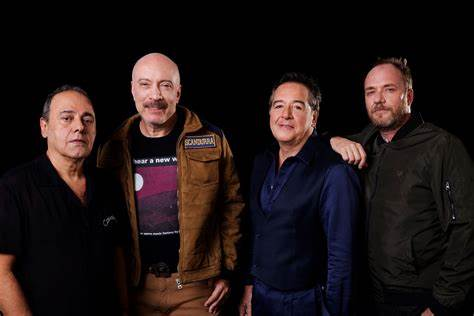
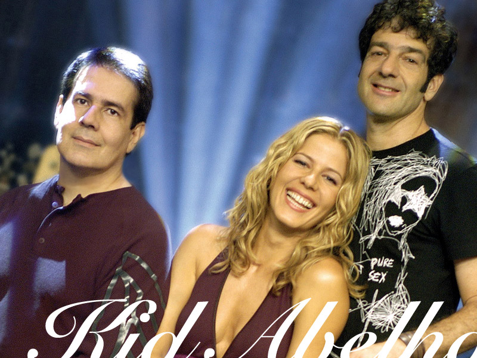

| Imagem da banda | nome da banda | Musica Preferida | Letra |
|---|---|---|---|
| Titans | BiCHOS ESCROTOS | Bichos Saiam dos lixos Baratas Me deixem ver suas patas Ratos Entrem nos sapatos Do cidadão civilizadoPulgas Que habitam minhas rugas Oncinha pintada Zebrinha listrada Coelhinho peludo Vão se foder Porque aqui na face da Terra Só bicho escroto é o que vai ter Bichos escrotos, saiam dos esgotos Bichos escrotos, venham enfeitar Meu lar Meu jantar Meu nobre paladar Bichos Saiam dos lixos Baratas Me deixem ver suas patas Ratos Entrem nos sapatos Do cidadão civilizado Pulgas Que habitam minhas rugas Oncinha pintada Zebrinha listrada Coelhinho peludo Vão se foder Porque aqui na face da Terra Só bicho escroto é o que vai ter |
|
| Paralamas do sucesso | ÓCULOS | Se as meninas do Leblon Não olham mais pra mim (eu uso óculos) E volta e meia eu entro com meu carro Pela contramão (eu tô sem óculos) Se eu to alegre eu ponho os óculos E vejo tudo bem Mas se eu to triste eu tiro os óculos Eu não vejo ninguém Por que você não olha pra mim? (ô-ô) Me diz o que é que eu tenho de mal (ô-ô) Por que você não olha pra mim? Por trás dessa lente tem um cara legal Oi, oi, oi, oi, ô Eu preciso te dizer que eu nunca fui o tal Era mais jogo se eu tentasse fazer charme de intelectual Se eu te disser periga você não acreditar em mim Eu não nasci de óculos, eu não era assim, não Por que você não olha pra mim? (ô-ô) Me diz o que é que eu tenho de mal (ô-ô) Por que você não olha pra mim? Por trás dessa lente tem um cara legal |
|
|  | Legião Urbana | GIZ | E mesmo sem te ver Acho até que estou indo bem Só apareço, por assim dizer Quando convém aparecer ou Quando quero Quando quero Desenho toda a calçada Acaba o giz, tem tijolo de construção Eu rabisco o sol Que a chuva apagou Quero que saibas que me lembro Queria até que pudesses me ver És, parte ainda Do que me faz forte e Pra ser honesto Só um pouquinho infeliz Mas tudo bem Tudo bem, tudo bem Tudo bem, tudo bem, tudo bem Lá vem, lá vem, lá vem De novo Acho que estou gostando de alguém E é de ti que não me esquecerei Quando quero (tudo bem, tudo bem, tudo bem) Quando quero (tudo bem, tudo bem, tudo bem) Quando quero (tudo bem, tudo bem, tudo bem) Eu rabisco o sol que a chuva apagou (quando quero) Acho que estou gostando de alguém (tudo bem, tudo bem, tudo bem) |
|  | Ira | ENVELHEÇO NA CIDADE | Mais um ano que se passa (Mais um ano sem você) Já não tenho a mesma idade Envelheço na cidade Essa vida é jogo rápido Para mim ou pra você Mais um ano que se passa Eu não sei o que fazer Juventude se abraça Se unen pra esquecer Um feliz aniversário Para mim ou pra você Quero ouvir! (Feliz aniversário) (Envelheço na cidade) (Feliz aniversário) Envelheço na cidade Feliz aniversário (Envelheço na cidade) Feliz aniversário Meus amigos, minha rua As garotas da minha rua Já o sinto, não os tenho Mais um ano sem você |
|  | Kid Abelha | NADA SEI DESSA VIDA | Nada sei dessa vida Vivo sem saber Nunca soube, nada saberei Sigo sem saber Que lugar me pertence Que eu possa abandonar Que lugar me contém Que possa me parar Sou errada, sou errante Sempre na estrada, sempre distante Vou errando enquanto o tempo me deixar Errando enquanto o tempo me deixar Nada sei desse mar Nado sem saber De seus peixes, suas perdas De seu não respirar Nesse mar, os segundos Insistem em naufragar Esse mar me seduz Mas é só pra me afogar Sou errada, sou errante Sempre na estrada, sempre distante Vou errando enquanto o tempo me deixar Errando enquanto o tempo me deixar |